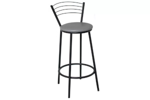
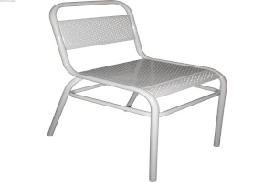

Зачем мы собираем стулья?
Мне кажется, стулья помнят нас больше, чем мы их. Вот этот стул помнит, как я диплом писал и уснул на нём. А этот — как мы с друзьями на кухне сидели до утра. В общем, я решил их собрать, пока не забыл. Если у тебя тоже был стул, который выдержал твоего кота, твои танцы или просто простоял 20 лет — добавляй в музей!
📊 Таблица позора и славы
| Тип стула | Где чаще подводит | Средний срок жизни до скрипа | Количество в коллекции | Уровень ностальгии 🥲 |
|---|---|---|---|---|
| Детский стульчик | Во время кормёжки | 3 года | 12 | ⭐⭐⭐⭐⭐ |
| Школьный стул | На контрольной | 10 лет | 27 | ⭐⭐⭐⭐ |
| Офисное кресло | В день дедлайна | 2 года (потом колесо) | 34 | ⭐⭐⭐ |
| Табуретка | Когда встаёшь на неё | бессмертна | 45 | ⭐⭐⭐⭐⭐ |
| Барный стул | После третьей порции | 5 лет | 8 | ⭐⭐⭐ |
*Уровень ностальгии измеряется в слезах умиления
🗺️ География стульев (где мы их насидели)

Школы
27 стульев
Офисы
34 стула
Дачи
45 стульев
Кафе и бары
18 стульев
Поликлиники
9 стульев (самые героические)